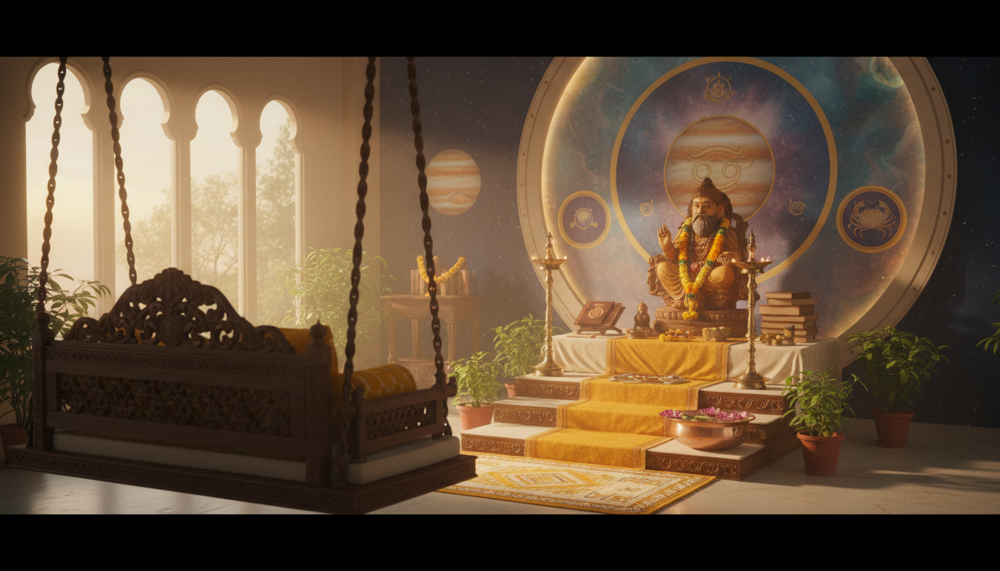

वैदिक ज्योतिष में बृहस्पति (गुरु) को 'परम शुभ ग्रह' (Greater Benefic) माना गया है। यह विस्तार, ज्ञान, प्रचुरता और नैतिकता का प्रतीक है। जब बृहस्पति अपनी उच्च राशि, कर्क (Cancer) में प्रवेश करता है, तो यह अपनी दिव्य ऊर्जा को पूर्ण सामर्थ्य के साथ प्रकट करता है। पिछले एक वर्ष से गुरु मिथुन राशि में थे, जो उनके लिए 'शत्रु राशि' या 'हानि का स्थान' (Detriment) था। मिथुन की तर्क-वितर्क और अत्यधिक सूचनाओं (Information Overload) वाली ऊर्जा से निकलकर कर्क की भावनात्मक गहराई में प्रवेश करना, पाठकों के लिए "ताजी हवा के एक झोंके" के समान है।

बृहस्पति और कर्क राशि: एक दिव्य मिलन
बृहस्पति और कर्क राशि का मिलन ज्योतिषीय दृष्टिकोण से अत्यंत शुभ माना जाता है। जहाँ बृहस्पति उदारता और विस्तार के कारक हैं, वहीं कर्क राशि पोषण और सुरक्षा की प्रतीक है। इस गोचर में निम्नलिखित गुण मुख्य रहेंगे:
- जल तत्व और अंतर्ज्ञान: कर्क एक जल तत्व की राशि है, जो हमारी संवेदनशीलता और अंतर्ज्ञान (Intuition) को जागृत करती है।
- मातृत्व और पोषण (Mama Bear Energy): यह गोचर 'मामा बियर' ऊर्जा को सक्रिय करता है—जो अपने प्रियजनों के प्रति अत्यंत सुरक्षात्मक, दयालु और पोषण देने वाली होती है।
- चर राशि (Cardinal Sign): कर्क एक चर राशि है, जो सकारात्मक बदलावों की शुरुआत करती है। यह हमारे भावनात्मक आधार और सुरक्षा प्रणालियों को मजबूत करने का समय है।
- असीमित उदारता: इस दौरान 'बड़ा दिल' रखने और निस्वार्थ सेवा करने की प्रवृत्ति बढ़ेगी। यह समय दूसरों के लिए 'सूप किचन' चलाने जैसी उदारता दिखाने का है।
गोचर की महत्वपूर्ण तिथियां और नक्षत्र विश्लेषण
बृहस्पति का यह गोचर मुख्य रूप से 9 जून, 2025 से 29 जून, 2026 तक रहेगा। हालांकि, इसका आरंभ शनि के साथ 'केंद्र योग' (Square) के कारण थोड़ा चुनौतीपूर्ण हो सकता है, जो जून 2025 की शुरुआत में गुरु की शुभता को कुछ समय के लिए कम कर सकता है।
महत्वपूर्ण चरण:
- प्रारंभिक प्रवेश (Short Stay): 18 अक्टूबर, 2025 से 5 दिसंबर, 2025 तक बृहस्पति कर्क राशि में अल्प प्रवास करेंगे। यह समय 'बीज बोने' (Seeding) और भविष्य की बड़ी योजनाओं की 'प्रारंभिक स्वीकृति' का है।
- नक्षत्रों का प्रभाव: गुरु पुनर्वसु, पुष्य और अश्लेषा नक्षत्रों से गुजरेंगे। विशेष रूप से, पुनर्वसु के चौथे पद में गुरु 'वर्गोत्तम' (Vargottama) होने के साथ-साथ 'पुष्कर नवांश' (Pushkara Navamsa) में भी होंगे। इस स्थिति में बृहस्पति "फुसफुसाते नहीं, बल्कि घोषणा करते हैं।" उनके फल अत्यंत स्पष्ट और शक्तिशाली होंगे।
ध्यान रहे कि 3 अक्टूबर, 2025 से शनि गुरु के नक्षत्र (पूर्वाभाद्रपद) में होंगे, जिससे गुरु 'निर्देशक' की भूमिका में होंगे और शनि उनके कार्यों को मूर्त रूप देंगे।
सामाजिक और वैश्विक प्रभाव
बृहस्पति का कर्क राशि में गोचर समाज की प्राथमिकताओं को 'सूचना के जाल' (Podcaster's world) से हटाकर 'जमीनी हकीकत' की ओर ले जाएगा। अब दुनिया को आडंबरपूर्ण नेताओं की नहीं, बल्कि 'विनम्र रक्षकों' (Humble Protectors) की आवश्यकता होगी।
- खाद्य और जल सुरक्षा: वैश्विक स्तर पर स्वच्छ जल और भोजन की उपलब्धता के लिए नीतियां और एमओयू (MOUs) साइन होंगे।
- आवास और रियल एस्टेट: घर और भूमि से जुड़े मामलों में तेजी आएगी। यह अपनी जड़ें मजबूत करने और स्थायी निर्माण का समय है।
- नेतृत्व का नया स्वरूप: नेल्सन मंडेला और जो बाइडन जैसे नेताओं के उदाहरणों से स्पष्ट है कि कर्क के गुरु वाले नेतृत्व में एक व्यापक और समावेशी विजन होता है।
- सुरक्षा तंत्र: महिलाओं और बच्चों के लिए सामाजिक सुरक्षा जाल (Social Safety Nets) को मजबूत करने पर ध्यान दिया जाएगा।
सभी 12 लग्नों पर प्रभाव (Impact on all 12 Rising Signs)
यह गोचर आपके 'लग्न' (Rising Sign) के अनुसार निम्नलिखित फल देगा:
- मेष लग्न (Aries Rising): 4वां भाव - परिवार में खुशहाली आएगी। यह अपने 'सपनों के घर' (Dream Home) में बसने का सबसे सही समय है।
- वृषभ लग्न (Taurus Rising): 3रा भाव - संचार कौशल में निखार आएगा। कोई महत्वपूर्ण लेखन परियोजना या संवाद की पहल सफलता दिलाएगी।
- मिथुन लग्न (Gemini Rising): 2रा भाव - आर्थिक स्थिति में जबरदस्त वृद्धि होगी। आपकी कमाई की क्षमता (Earning Power) कई गुना बढ़ सकती है।
- कर्क लग्न (Cancer Rising): 1ला भाव - व्यक्तित्व में निखार, आत्मविश्वास और आकर्षण बढ़ेगा। पुरानी रुकी हुई योजनाएं अब फल देंगी।
- सिंह लग्न (Leo Rising): 12वां भाव - गहरी आध्यात्मिक अंतर्दृष्टि और शांति का समय है। सपनों के माध्यम से आपको महत्वपूर्ण मार्गदर्शन मिलेगा।
- कन्या लग्न (Virgo Rising): 11वां भाव - प्रभावशाली मित्रों और नेटवर्क का सहयोग मिलेगा। आपकी बड़ी आकांक्षाएं पूरी होने की राह आसान होगी।
- तुला लग्न (Libra Rising): 10वां भाव - करियर में जबरदस्त उछाल! आपको 'सार्वजनिक प्रशंसा' (Public Acclaim) और नया पदभार मिल सकता है।
- वृश्चिक लग्न (Scorpio Rising): 9वां भाव - उच्च शिक्षा, प्रकाशन (Publishing) या अंतर्राष्ट्रीय अनुभवों के लिए यह एक 'लीप ऑफ फेथ' (Leap of Faith) का वर्ष है।
- धनु लग्न (Sagittarius Rising): 8वां भाव - रणनीतिक निवेश और साझा संपत्तियों से लाभ होगा। पैतृक घावों को भरने और धन वृद्धि का समय है।
- मकर लग्न (Capricorn Rising): 7वां भाव - विवाह और साझेदारी के सपने सच होंगे। आपके संबंधों में गहरा भावनात्मक पोषण और वृद्धि होगी।
- कुंभ लग्न (Aquarius Rising): 6ठा भाव - स्वास्थ्य में सुधार और कार्यक्षमता (Efficiency) में बढ़ोत्तरी होगी। कार्यस्थल पर आपके कौशल की सराहना होगी।
- मीन लग्न (Pisces Rising): 5वां भाव - कलात्मक पहचान, रोमांस और संतान सुख के लिए स्वर्ण काल है। आपकी रचनात्मकता को दुनिया पहचानेगी।
प्राचीन ग्रंथों का मार्गदर्शन: सारावली और गरुड़ पुराण
'सारावली' के रचयिता कल्याण वर्मा के अनुसार, कर्क राशि का बृहस्पति व्यक्ति को विद्वान, सुंदर, दानी और प्रसिद्ध बनाता है। ऐसा व्यक्ति अपने मित्रों के प्रति गहरा अनुराग रखता है और उसमें नेतृत्व के स्वाभाविक गुण होते हैं।
'गरुड़ पुराण' इस गोचर के दौरान 'सत्कर्म' और 'धर्म' की महत्ता पर प्रकाश डालता है। ग्रंथ के अनुसार: "सत्कर्म मनुष्य को बंधन में नहीं डालता" (Right action does not put one into bondage)। यह सिखाता है कि शरीर और धन अस्थायी हैं, अतः केवल पुण्य का संचय ही साथ जाता है।
यदि आपकी कुंडली के 9वें भाव में सूर्य के साथ राहु या शनि है, तो यह 'पितृ दोष' की स्थिति हो सकती है। इस गोचर के दौरान बुजुर्गों की सेवा और धर्म का पालन इस ऋण को कम करने में सहायक होता है।
शुभ फल प्राप्ति के लिए उपाय और सुझाव
बृहस्पति की दिव्य कृपा प्राप्त करने के लिए निम्नलिखित सात्विक उपायों को अपनाएं:
- आहार और दान: खजूर (Dates), बेरीज, कद्दू (Pumpkin/Squash), क्रीम, गन्ना, घी, शहद और चिकपीस (काबुली चना) का सेवन या दान करें।
- रंग और वस्त्र: गुरुवार को पीले रंग के वस्त्र धारण करें और केसर या हल्दी का तिलक लगाएं।
- गुरु और बुजुर्गों का सम्मान: अपने शिक्षकों और बुजुर्गों का आशीर्वाद लें। यह सूर्य और गुरु दोनों को बल देता है।
- मंत्र और उपासना: नियमित रूप से गायत्री मंत्र का जाप करें। घर के उत्तर-पूर्व कोने (ईशान कोण) में अपनी पूजा का स्थान बनाएं और पीपल के वृक्ष को जल अर्पित करें।
निष्कर्ष और मुख्य सीख
कर्क राशि में बृहस्पति का यह गोचर एक "स्थायी आशीर्वाद" (Lasting Blessing) है। यह हमें याद दिलाता है कि बहुतायत अर्जित नहीं की जाती, बल्कि इसे स्वीकार किया जाता है।
इस ऊर्जा का सर्वोत्तम उपयोग करने के 3 तरीके:
- अपना शरणस्थल (Sanctuary) बनाएं: अपने घर को शांति और सुरक्षा का केंद्र बनाएं।
- भावनात्मक उदारता: दूसरों के लिए अपना हृदय खोलें, दयालुता आपकी सबसे बड़ी शक्ति है।
- अंतर्ज्ञान पर विश्वास: तर्क के स्थान पर अपनी अंतरात्मा की आवाज सुनें।
भरोसा रखें, यह अवधि आपके सपनों को फलने-फूलने के लिए सबसे उपजाऊ जमीन प्रदान कर रही है।
शुभम भवतु!
Sources
- 3 Auspicious astrological rituals to welcome Jupiter's Transit into Cancer Sign on 2nd June, 2026 - The Times of India
- Astrological Yoga's for curses of past life's - Astrological Musings
- Guru Peyarchi 2026 Date, Time & Palangal | Jupiter Transit in ...
- Jupiter in all 12 houses - Consult Lunar Astro
- Fact Sheets-Cancer (Karka Rashi) in Vedic Astrology - astrosutras.in
- Jupiter Transit in Cancer 2026 for Sagittarius(Dhanu) Ascendant: Health, property, transformation and hidden gains - The Times of India
- Bhava Phala Praveshika — 6: Sukha Bhava (4th House) | by Varaha ...
- Fact Sheets-Fourth House (Sukha Bhava) in Vedic Astrology - astrosutras.in
- Types, Effects, Remedies of Pitra Dosha or Pitru Dosh - Eshwar Bhakti
- Jupiter Transit in Cancer (2026): Effects on All 12 Zodiac Signs & Proven Remedies
- Jupiter and Its Effects in 12 Houses of Horoscope in Lal Kitab - Astroshastra
- Fourth House in Vedic Astrology: Mother, Home, Property - AstroSight
- Pitra Paksha: Healing Pitra Dosh & Ancestral Karma for a Harmonious Life - Aanchal Tarot
- Lal Kitab Remedies for Jupiter in Vedic Astrology - RashiRatanBhagya
- Understanding Pitru Dosha in Astrology | PDF - Scribd
- Your Children and Their Karmas | PDF | Planets In Astrology - Scribd
- How To Make The Most Of Jupiter In Cancer! - Two Wander
- Jupiter in Cancer | Vedic Healing
- Your guide to Jupiter in Cancer - CHANI
- Guruvar Vrat - Procedure, Mantra and Significance of Thursday Fast - Eshwar Bhakti
- Thursday Ritual: Guru Remedies to gain wealth, money and success - The Times of India
- Fourth House and its Implications - neelastro.in
- Jupiter in Cancer - AstroSage
- Jupiter in Cancer: The Art of World-Building - HéloAstro
- Jupiter Transit in Cancer 2026: 4 Signs Facing Major Fortune - Astro Zindagi
- Chandala Dosha Shanti Yagya - Vydic Yanya Centre
- Guru Chandal Dosha Explained With Effects and Remedies - Astrologer SK Abid
- Understanding Guru Chandal Yoga Effects | PDF | Technical Factors Of Astrology - Scribd
- Guru Chandal Yog! Tool or Toxin ☠️ : r/Nakshatras - Reddit
- why Jupiter is considered exalted in aquarius? : r/Nakshatras - Reddit
- Why do some say that Jupiter gets exalted in Leo? : r/Nakshatras - Reddit
- Cancer Jupiter in Vedic Astrology - YouTube
- Guru in Cancer: A Short Stay, A Lasting Blessing Oct-Dec 2025 12 Signs Readings by VL #jupiter - YouTube
- Jupiter's Influence on 12 Houses in Astrology | PDF - Scribd
- Jupiter Transit in Cancer 2026 for Pisces(Meena) Ascendant: Career, fortune and growth
- Jupiter's Transit into Cancer | JYOTHISHI
- We're About to Take a Very Dark Turn: Jupites is Turning Retrograde - Reddit
- Pradeep Khadka - AstroFusion
- Mangal Dosha | Maa Baglamukhi Guru Nalkheda
- Jupiter in Capricorn, a way to analyse. : r/Nakshatras - Reddit
- Debilitated Jupiter for Libra Ascendants 27M : r/vedicastrology - Reddit
- Effects of Jupiter - Jyotish Vidya
- Thursday Remedies 2024 for Special Blessings From Sri Vishnu - AstroVed
- What Is Kundli (Janam Kundali)? Complete Guide to Your Vedic Birth Chart | Zodii
- Saravali by King Kalyana Varma - WORLD PANCHANG
- SARAVALI - Squarespace
- Understanding Exalted Jupiter's Impact | PDF | Astrology | Science - Scribd
- YouTube Music
- The Garuda Purana
- Garuda Purana – Karma Kanda (Concise Excerpts) – Page 9 - TheVaisnava Online Magazine
- Garuda Purana - Hindu Online
- Garuda Purana Teachings - The Gold Scales
- Garuda Purana